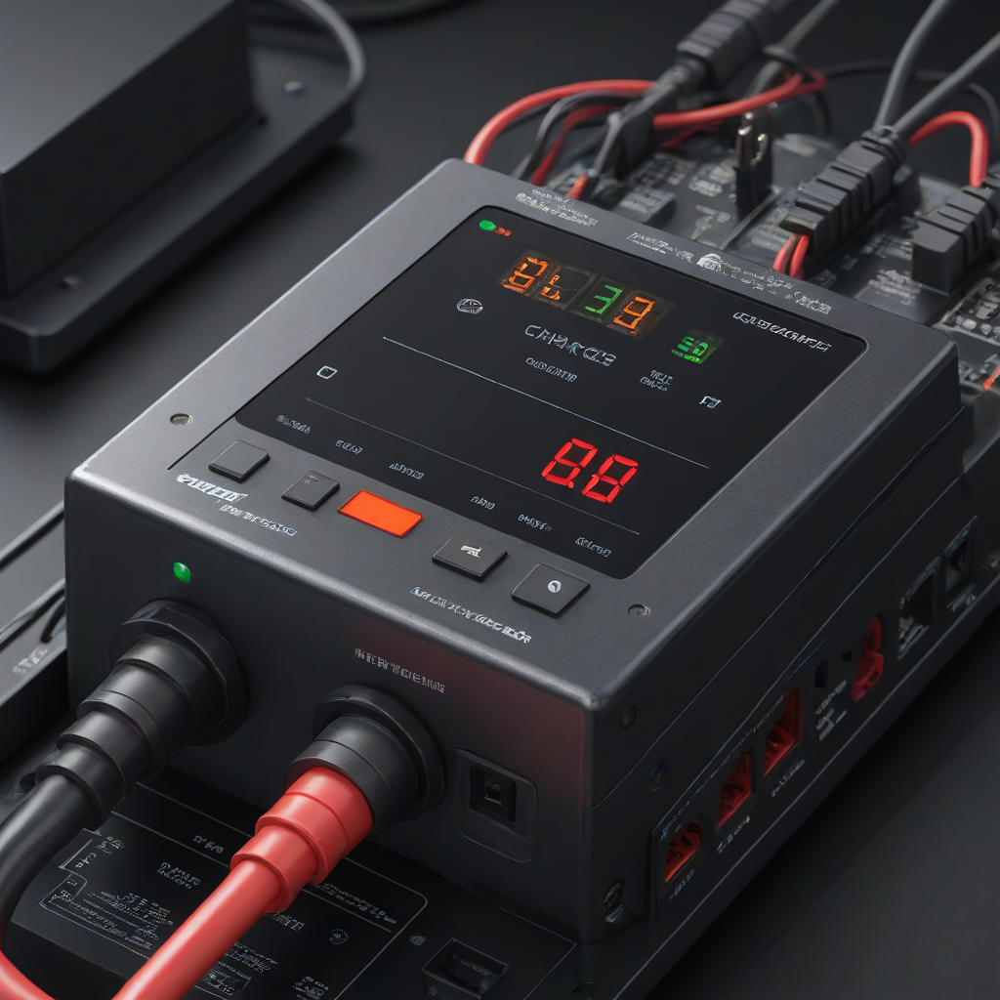
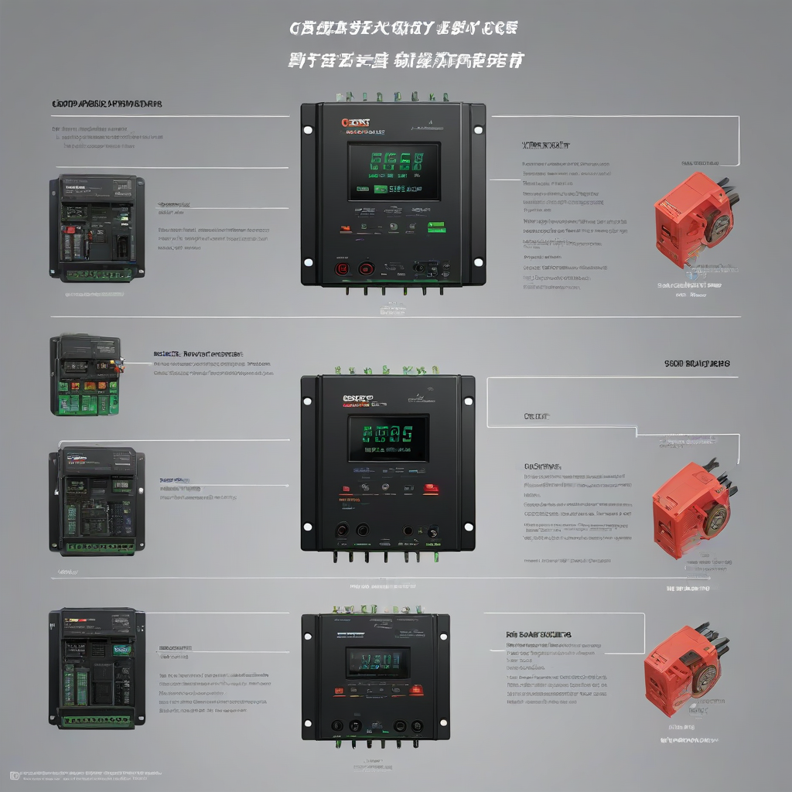

Imagine your solar panels basking in full sun, but your batteries sit stubbornly at 12.2V—no charge, no progress. An MPPT (Maximum Power Point Tracking) charge controller that’s “not charging” is one of the most frustrating—and common—solar system failures. Unlike PWM controllers, MPPT units *should* boost efficiency by up to 30% in ideal conditions, but when they fail silently, your entire system stalls. In 2026, with solar installation costs falling and battery storage demands rising, getting your charge controller right isn’t optional—it’s essential for ROI and reliability.
Why does this happen? Often, it’s not a broken controller but a subtle misstep in wiring, configuration, or system design. A loose terminal, a mismatched battery profile, or shading that dips input voltage below the MPPT startup threshold can all cause the controller to shut down silently. The good news? Most “not charging” issues can be diagnosed in under 30 minutes with basic tools—and no electrician required (if you’re comfortable with 12V/48V DC systems).
This guide walks you through the exact steps professionals use to bring a non-charging MPPT controller back online—updated for 2026’s latest hardware, software, and pricing realities. We’ll cover safety, cost-effective fixes, and how to avoid costly mistakes that lead to replacement when repair would’ve worked.
Why an MPPT Charge Controller Not Charging Matters

A non-functional MPPT controller doesn’t just slow your solar savings—it risks permanent battery damage. Under-charged lead-acid batteries sulfide; over-discharged lithium batteries can fall below safe voltage thresholds and require expensive replacement or become unusable. In 2026, with average battery replacement costs ranging from $4,000 (Enphase IQ Battery) to $15,500 (Tesla Powerwall), skipping diagnostics could cost you more than the controller itself.
Common Mistakes That Cause “Not Charging”
- Incorrect battery type selection (e.g., selecting “Flooded” when your system uses AGM)
- Loose PV+ or PV– terminals (the #1 cause—vibration over time loosens connections)
- Low input voltage (MPPT controllers need ~5V above battery voltage *plus* the controller’s minimum startup margin—often 15–20V for 12V/24V systems)

ng>Shading or panel miswiring (reverse polarity in series strings can trip protection)- Firmware glitches (especially in Bluetooth-enabled controllers like Victron SmartSolar)
Step-by-Step Guide to Fixing an MPPT Charge Controller Not Charging
Tools Needed (2026 Edition)
- DC clamp meter (for measuring PV current/voltage under load)
- Multimeter (set to DC voltage, 50V+ range)
- Insulated screwdrivers (for terminal checks)
- Contact cleaner (for corroded terminals)
- Manufacturer’s manual (download the latest PDF—2026 models like Epever TRACER-An have updated firmware)
Time Required
- Basic checks (wiring, settings): 10–15 minutes
- Full diagnostics (including voltage threshold tests): 20–30 minutes
- Controller reset or firmware update: 5–10 minutes (if needed)
Safety Precautions
- Always disconnect PV and batteries before touching terminals (use a DC disconnect switch if installed)
- Work in dry conditions—DC arcs can sustain even at low voltages
- Never bypass the PV fuse or battery breaker
- Wear safety glasses—arc flashes, while rare, can eject molten metal
Follow this diagnostic sequence:
- Check the controller’s status lights (e.g., Victron: blinking green = MPPT tracking; red = fault; off = no input power)
- Measure PV open-circuit voltage (Voc) at the controller terminals. If Voc < controller’s minimum startup voltage (e.g., 22V for a 12V system), the controller won’t engage. 2026 tip: Panel Voc drops ~0.3% per °C rise—measure on a cool morning for accurate readings.
- Verify battery voltage at the controller’s battery terminals. If battery voltage is > controller’s max setpoint (e.g., 14.6V for AGM), the controller may hold off charging.
- Confirm battery type setting in the controller menu (see table below).
- Inspect all terminals for corrosion, looseness, or reversed polarity (PV+ to PV+, not PV–).
Cost Considerations
Budget Planning (2026 US Averages)
| Item | Low End | High End | Notes |
|---|---|---|---|
| MPPT Controller (30A) | $75 (Epever TRACER-An) | $220 (Victron SmartSolar 100/30) | Bluetooth models cost ~$30 more |
| Clamp Meter (Fluke 323) | $65 | $90 | Essential for PV current checks |
| Battery Replacement (Lead-acid) | $250 (100Ah deep-cycle) | $500 (Lithium LiFePO4) | EnergySage 2026 battery data |
| Professional Diagnostic | $120/hr | $180/hr | Typical 1-hour service call |
Where to Save
- Use free manufacturer tools (e.g., Epever’s “Solar Calculator” app) instead of paid diagnostic services
- Clean terminals with vinegar/baking soda—no need for expensive contact sprays
- Double-check settings in the controller menu before buying a replacement
Where to Invest
- Buy a clamp meter—it pays for itself in 1–2 diagnostics
- Pick MPPT controllers with Bluetooth/firmware updates (Victron, Epever, Renogy)—software fixes resolve many “phantom” faults
- Invest in quick-disconnect MC4 terminals to avoid re-crimping
Frequently Asked Questions
Why is my MPPT controller showing 0W input but the panels are in full sun?
This usually means no voltage is reaching the controller. Check: - PV fuse (often overlooked!) - MC4 connectors for moisture or damage - Series/parallel wiring errors (e.g., two panels wired in parallel but one reversed) - Controller’s PV input terminals (some have separate +/− for PV and battery—double-check labels)
Can cold weather cause an MPPT controller not to charge?
Yes—but indirectly. Cold raises panel Voc, which *helps* MPPT startup. However, if temperatures drop below −10°F (−23°C), lithium batteries may enter “low-temp disable” mode, halting charging. MPPT controllers like NREL-certified models now include low-temp protocols. Check your controller’s operating range—most specify −25°C to +60°C.
How do I reset an MPPT charge controller?
Steps vary by brand, but here’s the universal process: 1. Disconnect battery *and* PV 2. Wait 2 minutes (lets capacitors discharge) 3. Reconnect battery first (critical—applying PV without battery can trigger faults) 4. Reconnect PV 5. Hold the “MODE” or “SET” button for 5 seconds if no response For Victron: Use the VRM portal to remotely reset if Bluetooth is active.
Why does my controller charge briefly, then stop?
This points to overheating or voltage instability. Causes include: - Poor ventilation around the controller (MPPTs derate at >40°C ambient) - Weak battery (high internal resistance causes voltage sag) - Undersized PV wiring (voltage drop >3% trips UVLO protection) - 2026 update: Some controllers (e.g., Renogy Rover 40A) use predictive MPPT that pauses if panel voltage oscillates—add a DC-DC filter if using long cable runs.
Do I need a solar charge controller if my system is under 100W?
Yes—always. Even small panels can overcharge batteries in full sun. However, for tiny systems (<20W), PWM controllers like the Epever LS1215 ($18) are sufficient. MPPT only pays off above ~200W nominal system size (per DOE 2026 data).
How do I confirm if my controller is dead or just misconfigured?
Run the “Bypass Test”: 1. Temporarily bypass the controller—connect PV directly to battery *through a fuse* 2. If battery charges, the controller is faulty 3. If not, the issue is your PV array or wiring ⚠️ Warning: Only do this for 10–15 minutes max and monitor temperature—no sustained direct PV-to-battery connections!
Conclusion
Summary
An MPPT charge controller “not charging” is rarely a hardware failure. In 2026, with 30% federal ITC tax credits making solar more affordable, ensuring your controller runs efficiently protects your investment. Focus first on wiring integrity, battery settings, and input voltage—these resolve 80% of cases.
Next Steps
- Download our free 2026 DC Wiring Checklist (PDF) to verify all connections
- Use the NREL MPPT Calculator to validate your panel-string configuration
- Update firmware via manufacturer apps—2026 updates added support for new battery chemistries (e.g., lithium LFP with integrated BMS)